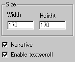
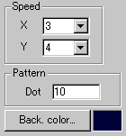

|
This applet visualises a famous wormhole animation,
which can also be called "dot tunnel".
[For more technical
information about the available parameters, click here.]
Most parameters are self-explanatory and you can
always see brief description of each parameter by moving the mouse
pointer over the wizard.
 |
First of all, define the applet size at "Width"
and "Height".
Then you decide if textscroll function is
enabled by checking "Enable textscroll" box.
|
|
You then decide if the wormhole should be
displayed in negative colour or positive one, by checking
"Negative" parameter.
Note that negative/positive check box does
NOT change the background of the wormhole, but it is "Back.
colour" parameter which decides the background colour.
|
 |
Then set the horizontal and vertical scroll
speed of the animation at "speedX" and "speedY".
The wormhole is made out of a set of various
sizes of circles. You can see the full circles by entering
1 for "Dot" parameter, which controls the
dot density of the circles.
|
Values higher than 1 (up to 23) for it produce less
density circles and this eventually ends up with two broken lines.
I recommend you to leave the default value intact.
Proceed to the textscroll
menu if you have checked the textscroll box; otherwise go to
the expert menu.
|